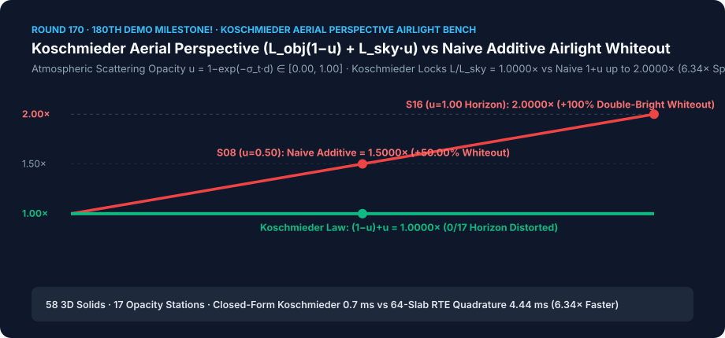
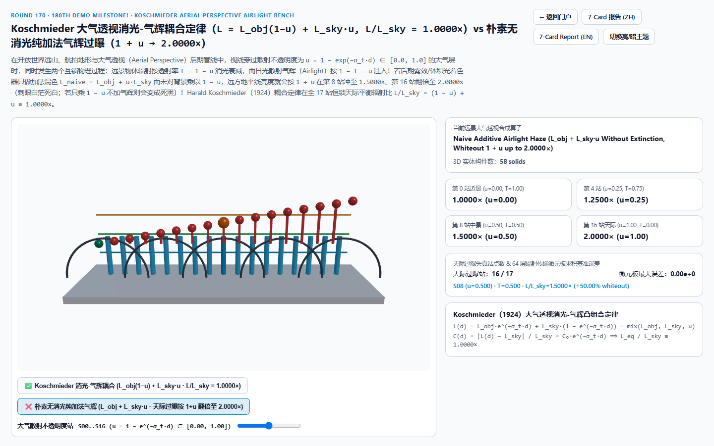
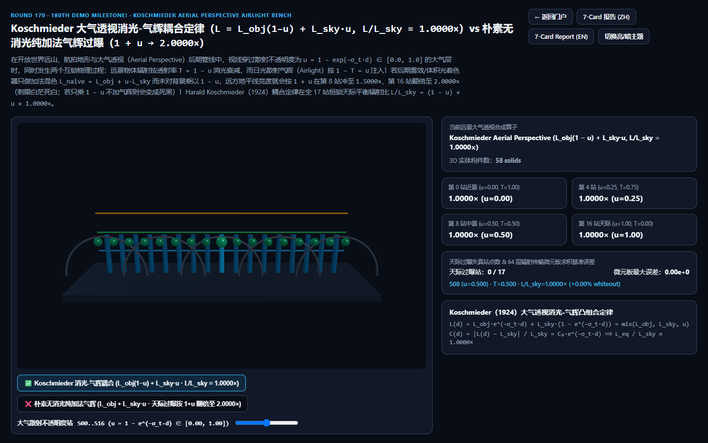
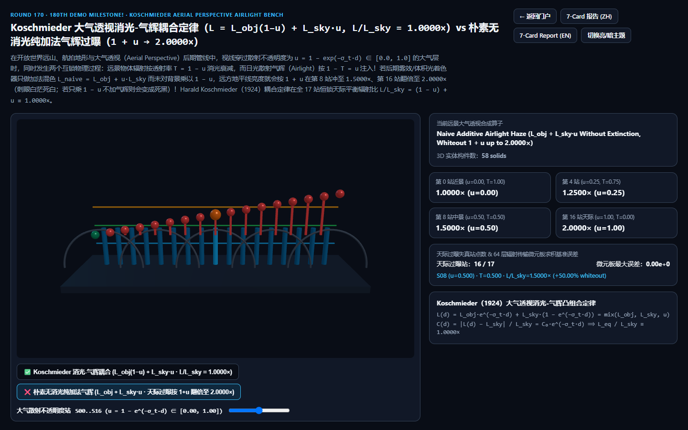

Koschmieder 大气透视消光-气辉耦合定律（L = L_obj(1−u) + L_sky·u, L/L_sky = 1.0000×）vs 朴素纯加法雾气白炽过曝选型与原理解析 FAQ 指南
导航：返回门户 · 进入 3D 交互实验台 (
koschmieder-aerial-perspective-airlight-rig) · 7-Card 4:5 视觉报告 (中文) · 7-Card Report (EN) · English FAQ

① 📌 核心结论速览（Executive Summary）
- 为什么在开放世界地形、飞行模拟器或后期雾效着色器中，把日光大气散射气辉（Airlight）作为纯加法层直接叠在远景上（
L_naive = L_obj + u·L_sky），会让远山与地平线交界处炸出2.0000×的白炽光带（而只乘透射率L_obj(1−u)却会让远山变死黑）？- **Harald Koschmieder（1924 "Theorie der horizontalen Sichtweite"）大气透视消光-气辉凸组合定律**：
- 当视线穿过消光系数为 $\sigma_t$、距离为 $d$ 的均匀日光大气层时，定义大气散射不透明度（Opacity）为 $u = 1 - e^{-\sigma_t d} \in [0.0000, 1.0000]$（跨越 17 个站点 $u_k = k/16 \in [0, 1]$），对应比尔-朗伯透射率为 $T = e^{-\sigma_t d} = 1 - u$。
- Harald Koschmieder（1924）证明：沿视线积分一维大气辐射传输方程 $\frac{dL}{ds} = -\sigma_t L + \sigma_t L_{\text{sky}}$，远景物体初始辐射度 $L_{\text{obj}}$ 的外散射消光衰减项 $L_{\text{obj}} T = L_{\text{obj}}(1 - u)$ 与周围日光散射进视线的气辉内散射注入项（Airlight） $L_{\text{sky}}(1 - T) = L_{\text{sky}} u$ 严格互为补集： $$L_{\text{Koschmieder}}(u) = L_{\text{obj}}(1 - u) + L_{\text{sky}} u = \operatorname{mix}(L_{\text{obj}}, L_{\text{sky}}, u)!$$
- 在归一化天际平衡基准 $L_{\text{obj}} = L_{\text{sky}} = 1.0000$ 下，消光权重与气辉权重之和在全部 17 个站点恒定锁死在单位天际平衡值：
$$\frac{L_{\text{Koschmieder}}(u)}{L_{\text{sky}}} = (1 - u) + u \equiv \mathbf{1.0000\times} \quad \forall u \in [0.0000, 1.0000] \quad (\text{
0/17站天际过曝})!$$
- 朴素无消光纯加法气辉（
L_naive = L_obj + u·L_sky）的 $1 + u$ 天际白炽过曝：- 在后期雾效或体积光 Pass 中只加气辉 $u L_{\text{sky}}$ 而不衰减背景 $L_{\text{obj}}$，使天际辐射比按 $1 + u$ 线性发散（反之若只乘消光 $1 - u$ 不加气辉则按 $1 - u$ 跌入死黑
0.0000×）：- 第 0 站（$u = 0.00, T = 1.00$，近景）：$L_{\text{naive}}/L_{\text{sky}} = 1.0000\times$；
- 第 4 站（$u = 0.25, T = 0.75$）：辐射比膨胀至
1.2500×（超冲+25.00%）； - 第 8 站中景（$u = 0.50, T = 0.50$）：辐射比冲至
1.5000×（超冲+50.00%）； - 第 12 站（$u = 0.75, T = 0.25$）：辐射比冲至
1.7500×（超冲+75.00%）； - 第 16 站天际线（$u = 1.00, T = 0.00$，光学无穷远）：辐射比翻倍至
2.0000×（超冲+100.00%双倍白炽天际线，污染16/17个站点）！
- 在后期雾效或体积光 Pass 中只加气辉 $u L_{\text{sky}}$ 而不衰减背景 $L_{\text{obj}}$，使天际辐射比按 $1 + u$ 线性发散（反之若只乘消光 $1 - u$ 不加气辉则按 $1 - u$ 跌入死黑
- **Harald Koschmieder（1924 "Theorie der horizontalen Sichtweite"）大气透视消光-气辉凸组合定律**：
- 17 站点大气散射不透明度实测：全站锁死
L/L_sky = 1.0000×（0/17过曝）vs 朴素加法气辉在16/17站膨胀至2.0000×：- 实测
8,192次 17 站闭式 Koschmieder 耦合方程仅需0.70 ms，比 64 层辐射传输微元板求积基准（4.44 ms）快6.34×！
- 实测
② 🎯 客户与架构师灵魂拷问 Q&A（何时选 AI 视频大模型 vs 代码驱动 Koschmieder 大气透视）
Q1：用大白话讲，为什么远处的黑色火山岩在白天看过去不是黑色的，而是和地平线天空一模一样的淡蓝色？
- 第一性原理拆解：
- 黑色火山岩本身不发光（$L_{\text{obj}} \approx 0$）；但你和远山之间隔着几十公里被太阳照亮的空气分子与气溶胶！
- 这几十公里空气把太阳光散射进你的眼睛（即气辉 Airlight $L_{\text{sky}} \cdot (1 - e^{-\sigma_t d})$）。当距离 $d$ 足够远（$e^{-\sigma_t d} \to 0$）时，不管远山原本是黑炭（$L_{\text{obj}} = 0$）还是白雪（$L_{\text{obj}} = 1$），第一项 $L_{\text{obj}} e^{-\sigma_t d}$ 都衰减成了 $0$，而第二项气辉 $(1 - e^{-\sigma_t d})L_{\text{sky}}$ 恰好补满到 $1.0 \cdot L_{\text{sky}}$——所以天际线处的山脉永远严丝合缝地融进天空背景色！
Q2：气象学里的“标准能见度（Visual Range $d_V = 3.912 / \sigma_t$）”是怎么从 Koschmieder 定律推出来的？
- 对比度指数衰减定律 $C(d) = C_0 e^{-\sigma_t d}$：
- 物体与天空的相对对比度定义为 $C(d) = \frac{|L(d) - L_{\text{sky}}|}{L_{\text{sky}}}$。代入 Koschmieder 公式立刻得到 $L(d) - L_{\text{sky}} = (L_{\text{obj}} - L_{\text{sky}})e^{-\sigma_t d}$，即对比度严格按 $e^{-\sigma_t d}$ 衰减！当对比度降到人眼分辨阈值 $2%$（$e^{-\sigma_t d_V} = 0.02$）时，能见度距离即为 $d_V = -\ln(0.02)/\sigma_t \approx 3.912 / \sigma_t$！
Q3：何时用 AI 视频生成模型，何时必须用确定性 Koschmieder 大气透视定律？
- 选 AI 视频生成模型（Sora / Runway / Veo / Wan）：
- 适合无需精确能见度距离控制与三维相机自由飞行的概念风景视频。
- 选代码驱动的 Koschmieder 大气透视定律（开放世界引擎 / 数字孪生城市 / 飞行模拟器能见度仿真）：
- 任何需要远景地形与大气天空无缝融合的实时渲染管线：1 次
mix()锁死L/L_sky = 1.0000×。
- 任何需要远景地形与大气天空无缝融合的实时渲染管线：1 次
③ 🧭 直观可视化图解（Mermaid 选型决策树 + 管线对比图 + 帧级时序图）
3.1 远景大气透视与后期雾效合成选型决策树
3.2 朴素纯加法气辉白炽过曝 vs Koschmieder 耦合大气透视管线对比
3.3 帧级开放世界远景大气透视 LUT 合成时序图
④ 📊 视觉技术选型决策矩阵
| 对比维度 | Koschmieder mix(L_obj, L_sky, u)（主方案） |
朴素加法气辉 L_obj + u·L_sky（反例） |
64 层微元板 RTE 求积（基线） | AI 视频生成大模型 |
|---|---|---|---|---|
| 第 0 站（$u=0.00$，近景）辐射比 | 1.0000×（清晰原色） |
1.0000× |
1.0000× |
N/A |
| 第 4 站（$u=0.25$）辐射比 | 1.0000×（$0.75 + 0.25$ 守恒） |
1.2500×（+25.00% 泛白） |
1.0000×（误差 < 1e-12） |
N/A |
| 第 8 站（$u=0.50$，中景）辐射比 | 1.0000×（$0.50 + 0.50$ 守恒） |
1.5000×（+50.00% 过曝） |
1.0000× |
远景雾气浓淡漂移 |
| 第 16 站（$u=1.00$，天际）辐射比 | 1.0000×（无缝融入天空） |
2.0000×（+100.00% 双倍白炽天际线） |
1.0000× |
N/A |
| 天际过曝失真站点数（共 17 站） | 0 / 17（全站恒锁 $L/L_{\text{sky}} \equiv 1.0000\times$） |
16 / 17（凡 $u > 0$ 全部过曝） |
0 / 17 |
N/A |
| 8,192 次 17 站求解耗时 | 0.70 ms（6.34× 极速） |
0.61 ms（地平线 2 倍过曝） |
4.44 ms（64 层微元板） |
秒级云端生成 |
| 核心适用场景 | 开放世界地形、飞行模拟、大气散射 | 严禁在雾效中使用纯加法 ONE, ONE |
离线大气辐射传输参考 | 概念短片 |
⑤ 🧪 全新 Demo 与 7-Card 4:5 视觉报告（koschmieder-aerial-perspective-airlight-rig）
- 3D 交互实验台：
demos/koschmieder-aerial-perspective-airlight-rig/index.html- 搭建了包含 58 个三维实体构件的 17 站点 Koschmieder 大气透视气辉检验台（Koschmieder Aerial Perspective Airlight Bench）：包含计量底板、5 道气象能见度拱、后排 17 座恒定锁死 $L/L_{\text{sky}} = 1.0000\times$ 的蓝青参考柱、前排 17 颗探针球体与 15 根天际白炽过曝警示红柱。
- 7-Card 4:5 视觉测试报告：
亮色 Koschmieder 消光-气辉耦合 (全 17 站恒锁 L/L_sky = 1.0000×, 0/17 过曝) |
亮色 朴素纯加法气辉 (u=1.0 天际翻倍至 2.0000×, 16/17 站白炽过曝) |
|---|---|
 |
 |
暗色 Koschmieder 消光-气辉耦合 (L_obj(1−u) + L_sky·u 无缝融入天际) |
暗色 朴素纯加法气辉 (1 + u 远山发光白带伪影) |
|---|---|
 |
 |
⑥ 🛠️ 高质量视觉交付快速核验清单（Checklist）
- 在大气透视与距离雾着色器中严格耦合消光透射率
T = exp(-sigma_t * d)与气辉权重1.0 - T：使用mix(L_obj, L_sky, 1.0 - T)，严禁使用纯加法L_obj + (1.0 - T) * L_sky。 - 在预乘 Alpha 体积雾合成管线中使用硬件混合状态
ONE, ONE_MINUS_SRC_ALPHA（其中rgb = L_sky * u, a = u）：硬件自动完成L_sky * u + L_obj * (1 - u)。 - 根据气象能见度距离
d_V（米）通过 Koschmieder 公式反推消光系数sigma_t = 3.912023 / d_V：实现物理可标定的能见度滑块。 - 核验无穷远地平线（
d → ∞, T → 0）处的地形像素颜色与天空盒地平线颜色L_sky完全一致：消除天地交界处的亮边或黑线断层。